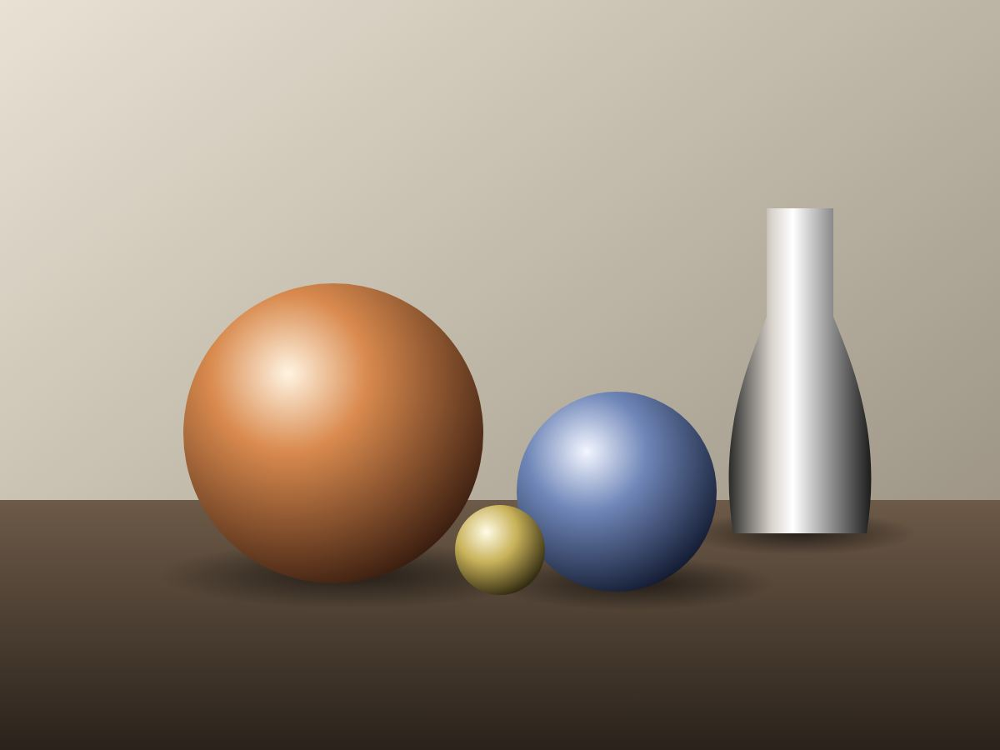

Exemple fictif
Fiche individuelle n° 0427
Section précédente
Faites défiler : la section se fixe, la fiche se défait en carrés qui rejoignent un nuage de points, puis l'ensemble se recompose en image.
Surtitre de la section
Un paragraphe court qui explique ce que deviennent les informations, et ce que l'ensemble permet de voir.

Exemple fictif
Fiche individuelle n° 0427
Ses informations se séparent en petits carrés.
Chaque carré devient un point parmi des milliers.
Les points se rangent et composent une image.
Variante à l'apparition
Plus bas, sans épinglage : à son arrivée à l'écran, l'image se rassemble depuis une grille de points. Le bouton la défait et la recompose.
Œuvre, réalisation, produit
Une légende de deux lignes : ce que l'on voit, quand, où, et pourquoi cette image compte.
Section suivante
En mode calme et sans JavaScript, la fiche et l'image sont affichées d'emblée, sans mouvement.